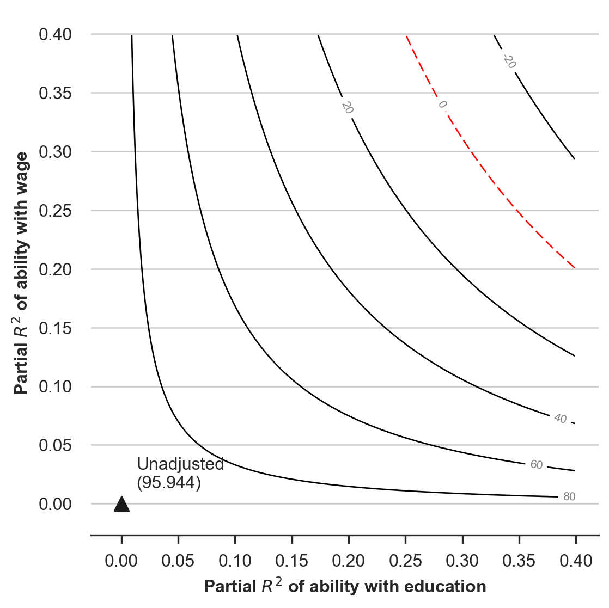
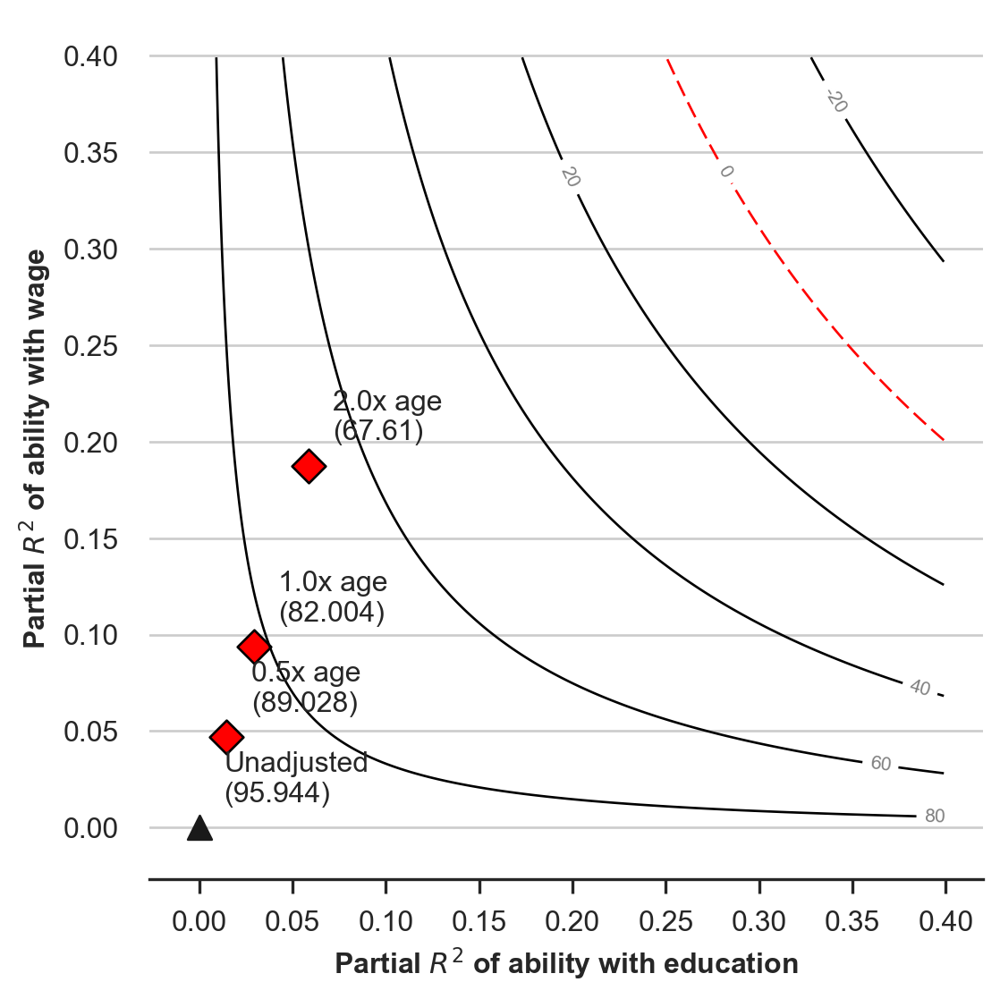
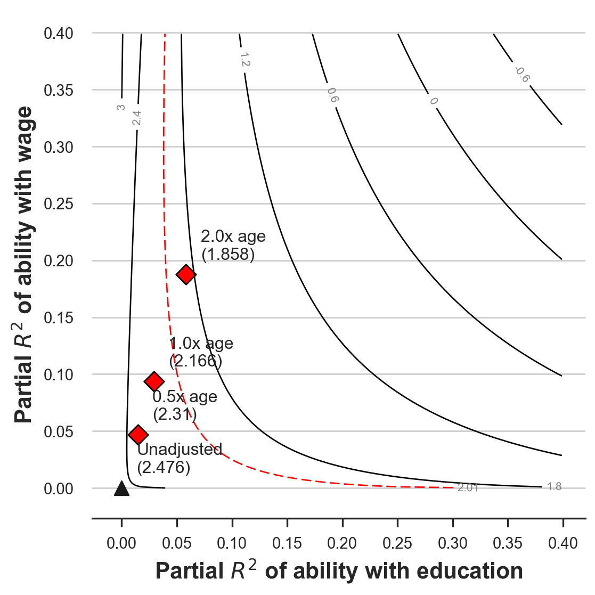
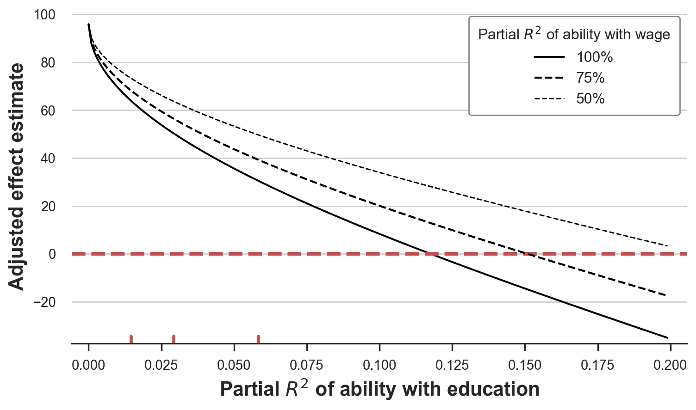

Omitted Variable Bias And What Can We Do About It

In causal inference, bias is extremely problematic because it makes inference not valid. Bias generally means that an estimator will not deliver an estimate of the true effect, on average.
This is why, in general, we prefer estimators that are unbiased, at the cost of a higher variance, i.e. more noise. Does it mean that every biased estimator is useless? Actually no. Sometimes, with domain knowledge, we can still draw some causal conclusion even with a biased estimator.
In this post, we are going to review a specific but frequent source of bias, omitted variable bias. We are going to explore the causes of the bias and leverage these insights to make causal claims, despite the bias.
Theory
Suppose we are interested in the effect of a variable $D$ on a variable $y$. Assume the data generating process can be represented with the following Directed Acyclic Graph (DAG). If you are not familiar with DAGs, I have written a short introduction here.
flowchart TD
classDef included fill:#DCDCDC,stroke:#000000,stroke-width:2px;
classDef excluded fill:#ffffff,stroke:#000000,stroke-width:2px;
classDef unobserved fill:#ffffff,stroke:#000000,stroke-width:2px,stroke-dasharray: 5 5;
D((D))
Z((Z))
Y((Y))
D --> Y
Z --> D
Z --> Y
If we could observe $Z$, we would run a linear regression to estimate the following model:
$$ y = \alpha D + \gamma Z + \varepsilon $$
where $\alpha$ is the effect of interest, and $Z$ is a variable that we do not observe or have access to. This model is usually referred to as the long model since it includes all variables of the model.
However, we do not observe $Z$, so that we have to estimate the following model:
$$ y = \alpha D + u $$
This model is usually referred to as the short model since it does not include all the variables of the model
What is the consequence of estimating the short model when the true model is the long one?
In that case, the OLS estimator of $\alpha$ is
$$ \begin{align} \hat \alpha &= \frac{Cov(D, y)}{Var(D)} = \ &= \frac{Cov(D, \alpha D + \gamma Z + \varepsilon)}{Var(D)} = \ &= \frac{Cov(D, \alpha D)}{Var(D)} + \frac{Cov(D, \gamma Z)}{Var(D)} + \frac{Cov(D, \varepsilon)}{Var(D)} = \ &= \alpha + \underbrace{ \gamma \frac{Cov(D, Z)}{Var(D)} }_{\text{omitted variable bias}} \end{align} $$
Therefore, we can write the omitted variable bias as
$$ \text{omitted variable bias} = \gamma \delta \qquad \text{ where } \qquad \delta := \frac{Cov(D, Z)}{Var(D)} $$
The beauty of this formula is its interpretability: the omitted variable bias consists in just two components, both extremely easy to interpret.
- $\gamma$: the effect of $Z$ on $y$
- $\delta$: the effect of $D$ on $Z$
Additional Controls
What happens if we had additional control variables in the regression? For example, assume that besides the variable of interest $D$, we also observe a vector of other variables $X$ so that the long regression is
$$ y = \alpha D + \beta X + \gamma Z + \varepsilon $$
Thanks to the Frisch-Waugh-Lowell theorem, we can simply partial-out $X$ and express the Omitted Variable Bias in terms of $D$ and $Z$.
$$ \text{omitted variable bias} = \gamma \times \frac{Cov(D^{\perp X}, Z^{\perp X})}{Var(D^{\perp X})} $$
where $D^{\perp X}$ are the residuals from regressing $D$ on $X$ and $Z^{\perp X}$ are the residuals from regressing $Z$ on $X$. If you are not familiar with Frisch-Waugh-Lowell theorem, I have written a short note here.
Example
Suppose were a researcher interested in the relationship between education and wages. Does investing in education pay off in terms of future wages? Suppose we had data on wages for people with different years of education. Why not looking at the correlation between years of education and wages.
The problem is that there might be many unobserved variables that are actually correlated with both variables. For simplicity, let’s concentrate on ability. People of higher ability might decide to invest more in education just because they are better in school and they get more opportunities. On the other hand, they might also get higher wages afterwards, purely because of their innate ability.
We can represent the data generating process with a Directed Acyclic Graph (DAG). If you are not familiar with DAGs, I have written a short introduction to Directed Acyclic Graphs here.
flowchart TD
classDef included fill:#DCDCDC,stroke:#000000,stroke-width:2px;
classDef excluded fill:#ffffff,stroke:#000000,stroke-width:2px;
classDef unobserved fill:#ffffff,stroke:#000000,stroke-width:2px,stroke-dasharray: 5 5;
D((education))
Z((ability))
Y((wage))
X1((age))
X2((gender))
D --> Y
Z --> D
Z --> Y
X1 --> Y
X2 --> Y
class D,X1,X2,Y excluded;
class Z unobserved;
Let’s load and inspect the data. I import the data generating process from src.dgp and some plotting functions and libraries from src.utils.
%matplotlib inline
%config InlineBackend.figure_format = 'retina'
from src.utils import *
from src.dgp import dgp_educ_wages
df = dgp_educ_wages().generate_data(N=50)
df.head()
| age | male | education | wage | |
|---|---|---|---|---|
| 0 | 62 | 1 | 12.0 | 5700.0 |
| 1 | 44 | 0 | 13.0 | 4200.0 |
| 2 | 63 | 1 | 9.0 | 4300.0 |
| 3 | 33 | 1 | 11.0 | 5000.0 |
| 4 | 57 | 0 | 12.0 | 4400.0 |
We have information on 300 individuals, for which we observe their age, their gender, the years of education, and the current monthly wage.
Suppose we were directly regressing wage on education.
model = smf.ols('wage ~ education + male + age', df).fit()
model.summary().tables[1]
| coef | std err | t | P>|t| | [0.025 | 0.975] | |
|---|---|---|---|---|---|---|
| Intercept | 2462.7571 | 785.781 | 3.134 | 0.003 | 881.061 | 4044.453 |
| education | 118.9297 | 52.623 | 2.260 | 0.029 | 13.005 | 224.854 |
| male | 603.7639 | 208.670 | 2.893 | 0.006 | 183.733 | 1023.795 |
| age | 20.5268 | 9.583 | 2.142 | 0.038 | 1.236 | 39.817 |
The coefficient of education is positive and significant. However, we know there might be an omitted variable bias, because we do not observe ability. In terms of DAGs, there is a backdoor path from education to wage that is not blocked and therefore biases our estimate.
flowchart TD
classDef included fill:#DCDCDC,stroke:#000000,stroke-width:2px;
classDef excluded fill:#ffffff,stroke:#000000,stroke-width:2px;
classDef unobserved fill:#ffffff,stroke:#000000,stroke-width:2px,stroke-dasharray: 5 5;
D((education))
Z((ability))
Y((wage))
X1((age))
X2((gender))
D --> Y
Z --> D
Z --> Y
X1 --> Y
X2 --> Y
class D,X1,X2,Y excluded;
class Z unobserved;
linkStyle 1,2 stroke:#ff0000,stroke-width:4px;
Does it mean that all our analysis is garbage? Can we still draw some causal inference from the regression results?
Direction of the Bias
If we knew the signs of $\gamma$ and $\delta$, we could infer the sign of the bias, since it’s the product of the two signs.
$$ \text{omitted variable bias} = \gamma \delta \qquad \text{ where } \qquad \gamma := \frac{Cov(Z^{\perp D}, y^{\perp D})}{Var(Z^{\perp D})}, \quad \delta := \frac{Cov(D, Z)}{Var(D)} $$
which in our example is
$$ \text{omitted variable bias} = \gamma \delta \qquad \text{ where } \qquad \gamma := \frac{Cov(\text{ability}, \text{wage})}{Var(\text{ability})}, \quad \delta := \frac{Cov(\text{education}, \text{ability})}{Var(\text{education})} $$
Let’s analyze the two correlations separately:
- The correlation between
abilityandwageis most likely positive - The correlation between
abilityandeducationis most likely positive
Therefore, the bias is most likely positive. From this, we can conclude that our estimate from the regression on wage on education is most likely a overestimate of the true effect, which is most likely smaller.
This might seem like a small insight, but it’s actually huge. Now we can say with confidence that one year of education increases wages by at most 118 dollars per month, which is a much much better than not being able to say anything.
Further Sensitivity Analysis
Can we say more about the omitted variable bias without making strong assumptions?
The answer is yes! In particular, we can ask ourselves: how strong should the partial correlations $\gamma$ and $\delta$ be in order to overturn our results?
In our example, we found a positive correlation between education and wages in the data. However, we know that we are omitting ability in our regression. The question is: how strong should the correlation between ability and wage, $\gamma$ and between ability and education, $\delta$, be in order to make the effect not significant or even negative?
Cinelli and Hazlett (2020) show that we can transform this question in terms of residual variation explained, i.e. the coefficient of determination, $R^2$. The advantage of this approach is interpretability. It is much easier to make a guess about the percentage of variance explained than to make a guess about the magnitude of a conditional correlation.
The authors wrote a companion package sensemakr to conduct the sensitivity analysis. You can find a detailed description of the package here.
The main arguments of the Sensemakr function are:
model: the regression model we want to analyzetreatment: the feature/covariate of interest
The question we will try to answer is the following:
How much of the residual variation in
education(x axis) andwage(y axis) doesabilityneed to explain in order for the effect ofeducationonwagesto change sign?
import sensemakr
sensitivity = sensemakr.Sensemakr(model = model, treatment = "education")
sensitivity.plot()
plt.xlabel("Partial $R^2$ of ability with education");
plt.ylabel("Partial $R^2$ of ability with wage");

From the plot, we can see, we need ability to explain around 30% of the residual variation in both education and wage in order for the effect of education on wages to disappear. In particular, the red line plots the level curve corresponding to a zero coefficient.
One question that you might (legitimately) have now is: what is 30%? Is it big or is it small? We can get a sense of the magnitude by comparing the results with the residual variance explained by another observed variable. Let’s use age for example.
The Sensemakr function accepts the following optional arguments:
benchmark_covariates: the covariate to use as a benchmarkkdandky: these arguments parameterize how many times stronger the confounder is related to the treatment (kd) and to the outcome (ky) in comparison to the observed benchmark covariate (female). In our example, settingkdandkyequal to $[0.5, 1, 2]$ means we want to investigate the maximum strength of a confounder half, same, or twice as strong asage(in explaining treatment and outcome variation).
sensitivity = sensemakr.Sensemakr(model = model,
treatment = "education",
benchmark_covariates = "age",
kd = [0.5, 1, 2],
ky = [0.5, 1, 2])
sensitivity.plot()
plt.xlabel("Partial $R^2$ of ability with education");
plt.ylabel("Partial $R^2$ of ability with wage");

It looks like even if ability had twice as much explanatory power as age, the effect of education on wage would still be positive. But would it be statistically significant?
We can repeat the same exercise, looking at the t-statistic instead of the magnitude of the coefficient. We just need to set the sensitivity_of option in the plotting function equal to t-value.
The question that we are trying to answer in this case is:
How much of the residual variation in
education(x axis) andwage(y axis) doesabilityneed to explain in order for the effect ofeducationonwagesto become not significant?
sensitivity.plot(sensitivity_of = 't-value')
plt.xlabel("Partial $R^2$ of ability with education");
plt.ylabel("Partial $R^2$ of ability with wage");

From the plot, we can see, we need ability to explain around 5% of the residual variation in both education and wage in order for the effect of education on wages not to be significant. In particular, the red line plots the level curve for the t-statistic equal to 2.01, corresponding to a 5% significance level. From the comparison with age, we see that a similar explanatory power would be sufficient to make the coefficient of education on wages not statisticall significant.
Lastly, we can look at some extreme scenarios. We try to answer the following question:
Suppose that
abilitywould fully explain the residual variation inwage. How would the estimated effect oneducationonwagesthen depend on the residual variation ofeducationexplained byability?
We just need to set the plot_type option in the plotting function equal to extreme.
sensitivity.plot(plot_type='extreme', lim=0.2)
plt.xlabel("Partial $R^2$ of ability with education");
plt.legend().set_title("Partial $R^2$ of ability with wage");

In the extreme scenarios of high correlation between ability and wage, even a small correlation between ability is sufficient to imply a substantially smaller true effect of education on wage.
Conclusion
In this post, I have introduced the concept of omitted variable bias. We have seen how it’s computed in a simple linear model and how we can exploit qualitative information to make inference in presence of omitted variable bias.
These tools are extremely useful since omitted variable bias is essentially everywhere. First of all, there are always factors that we do not observe, such as ability in our toy example. However, even if we could observe everything, omitted variable bias can also emerge in the form of model misspecification. Suppose that wages depended on age in a quadratic way. Then, also omitting the quadratic term from the regression introduces bias, which can be analyzed with the same tools we have used for ability.
References
[1] C. Cinelli, C. Hazlett, Making Sense of Sensitivity: Extending Omitted Variable Bias (2019), Journal of the Royal Statistical Society.
[2] V. Chernozhukov, C. Cinelli, W. Newey, A. Sharma, V. Syrgkanis, Long Story Short: Omitted Variable Bias in Causal Machine Learning (2022), working paper.